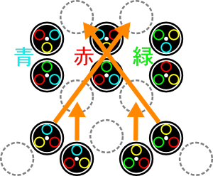
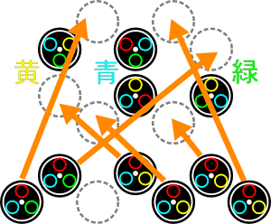

Chapter 3 医療は踊るOnset
- 1女王の誘惑/Temptation
-
Guide
下の図の見方だが、まず青と書かれている所にある2つの円盤を青で繋ぐ。同じように赤の部分は赤で、緑の部分は緑で繋ぐ。その後に橙色の矢印の通りに円盤を配置して色を合わせれば完成となる。
一問目

二問目

Special Bonus
条件 スコア 【30】秒未満で実験終了（HARD） 1000 【120】秒未満で実験終了（NORMAL） 800 【240】秒未満で実験終了（EASY） 800 【10】手以内で実験終了 1000 Operation Rank
ランク スコア C ～399 B 400～1099 A 1100～1799 S 1800～1999 XS 2000～ - 2TV取材/Prime Time
-
Infomation
- 制限時間 5分
- バイタル 80/99
Guide
ただの炎症と腫瘍の摘出なので特に問題は無いと思われる。ただし、数が多いのでバイタルに気をつけることと、フラッシュがたまに焚かれるので気を散らさないように集中しよう。
Special Bonus
条件 スコア Miss判定無し 500 【120/150/180】秒以上残して手術終了 700 バイタルを【10/25/45】以下に下げない 800 Operation Rank
ランク スコア C ～3899 B 3900～4899 A 4900～5699 S 5700～6299 XS 6300～ for XS
常にバイタルに気をつけながら処置すれば問題無いはず。
- 3英雄の記録/For the Future
-
Infomation
- 制限時間 5分
- バイタル 80/99
Guide
動脈瘤は放置すると肥大化して破裂してしまう。肥大化は鎮静剤の投与で抑えることができる。
問題となるのは複数の動脈瘤が出現した時、どれから手をつけるべきか。大動脈瘤は破裂までは時間がかかるので、まずは小さい動脈瘤から鎮静剤を投与していこう。
動脈瘤は切除してしまえば破裂することはなくなるので、素早く切除して次の動脈瘤へ手を伸ばす。この時ほかの動脈瘤が破裂しそうなら、鎮静剤を少しだけ投与して時間を稼いでから、目的の動脈瘤を処置しよう。とにかく破裂させないことが重要。
Special Bonus
条件 スコア Miss判定無し 400 【120/150/180】秒以上残して手術終了 700 Cool判定【8/10/12】回以上取得 600 動脈瘤を破裂させない 300 Operation Rank
ランク スコア C ～5199 B 5200～7099 A 7100～8499 S 8500～9299 XS 9300～ for XS
動脈瘤相手に2分はかなり短い。普通は大動脈瘤よりも小動脈瘤から処置するべきだが、大動脈瘤は肥大化した場合に切除まで必要な鎮静剤の量がかなり多いので、XSを狙うなら大動脈瘤から切除していこう。
- 5懐かしい顔/Familiar Faces
-
Infomation
- 制限時間 5分
- バイタル 80/99
Guide
開胸後の傷には出血が存在する。この出血は放置すると悪化して血だまりになるものと破裂して裂傷ができるものの2種類存在する。出血はゼリーですぐに処置できるので放置せずに優先して処置しよう。
画面内の処置を完了するとルーペで肺全体を見渡せるようになる。上端と下端に様々な傷が発生しているが、両方に出血が存在する。下端の出血が早く悪化してしまうので、まずは下へルーペで移動して出血を処置。すぐに上端へ移動して出血を処置しよう。
ある程度処置が進むと肺の中央に血胸（けっきょう）が発生する。内出血とは違って放置しても破裂しないが、他は内出血同様なので、余裕を見て処置しよう。
Special Bonus
条件 スコア Miss判定無し 400 【150/180/210】秒以上残して手術終了 700 Cool判定【5/7/11】回以上取得 500 出血箇所の悪化回数が【4/3/1】回以下 400 Operation Rank
ランク スコア C ～3999 B 4000～5799 A 5800～6699 S 6700～7099 XS 7100～ for XS
出血の悪化にさえ気をつければ問題無いと思われる。
- 6蘇るギルス/GUILT Returns
-
Infomation
- 制限時間 10分
- バイタル 80/99
Guide
キリアキ患者の連続執刀となる。
キリアキは出現時に潜っているのでエコーで影を特定する。特定した状態ならメスで切り出すことができる。切り出した後はレーザーを2回当てることで除去することが可能になる。
キリアキを放置すると次々と裂傷を生み出すので、できるだけ早く除去したい。裂傷を放置してもバイタルがどんどん減っていくので、まずは1体を除去して裂傷を縫合、バイタルを回復して次のキリアキに移りたい。
キリアキを規定数除去するとマザーが出現する。マザー出現時には大きな裂傷を伴うので、まずは真っ先にこの裂傷を縫合しよう。
マザーも同様にエコーで特定してからレーザーを当てればよいが、一度レーザーを当てると潜ってしまうので、再度エコーを当てる必要がある。
二人目の患者移行はマザーにレーザーを当てるとタマゴを生み出す場合がある。タマゴもエコーで特定してからメスで切り出し、最後にピンセットで摘出する必要がある。
タマゴ自体はほぼ無害だが、タマゴが存在している時にマザーにレーザーを当てるとタマゴが孵化してキリアキが生れてしまうので、必ずタマゴを摘出してからマザーにレーザーを当てること。
一人目
キリアキ1体が出現。除去すると新たに2体が出現する。
一人目のマザーは裂傷を生むだけ。2回レーザーを当てると除去完了となる。
二人目
キリアキ2体が出現。1体を除去するとさらに1体が出現する。
最初はマザーのみだが、レーザーを当てるとキリアキが1体発生。さらにレーザーを当てるとキリアキ1体と共にタマゴが1個発生。
合計3回レーザーを当てると除去完了となる。
三人目
キリアキ2体が出現。1体を除去するとさらに1体が出現する。
最初はマザー+タマゴ1個。次はタマゴ3個発生。次はタマゴ3個発生。次はタマゴ3個発生。
合計4回レーザーを当てると除去完了となる。
Special Bonus
条件 スコア Miss判定無し 400 【180/240/300】秒以上残して手術終了 700 MAX CHAIN 【30/60/90】以上 500 サナギの羽化回数【4/2/1】回以下 400 Operation Rank
ランク スコア C ～14499 B 14500～16499 A 16500～18199 S 18200～18999 XS 19000～ for XS
チェイン数が問題。とにかく縫合でBADを出さないように練習すること。
- » Chapter 4